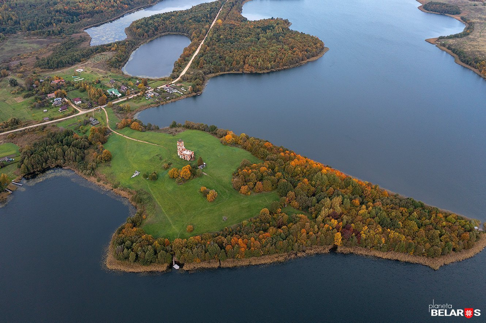

Чере́я — агрогородок в Чашникском районе Витебской области Белоруссии, в составе Лукомльского сельсовета. Население — 315 человек (2019). В 1924—1931 годах Черея была центром Черейского района.
На главную